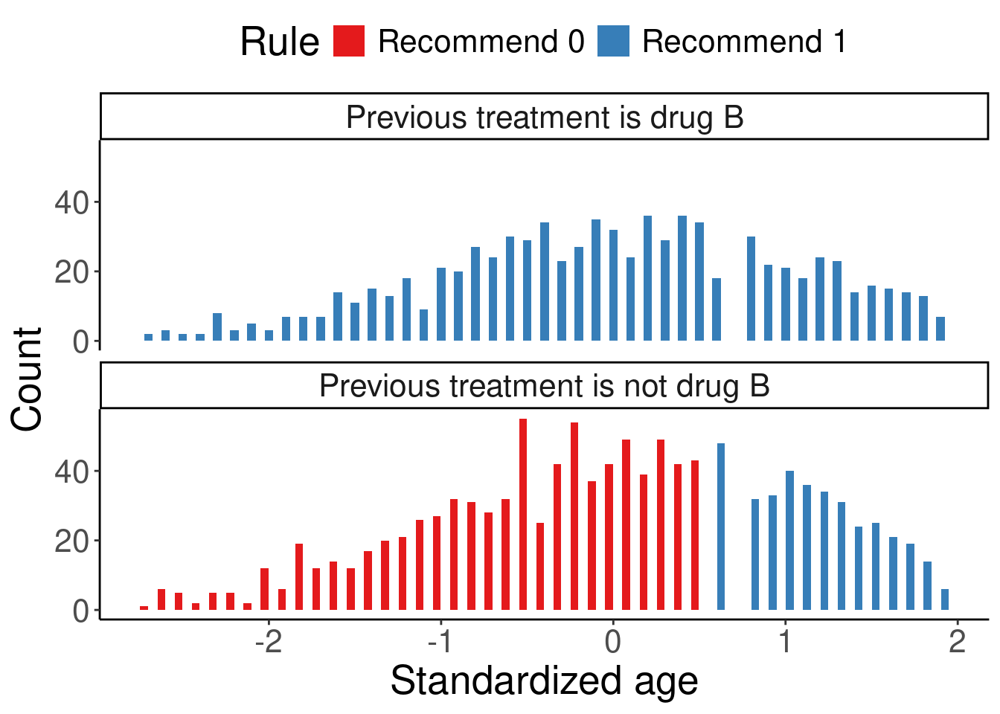
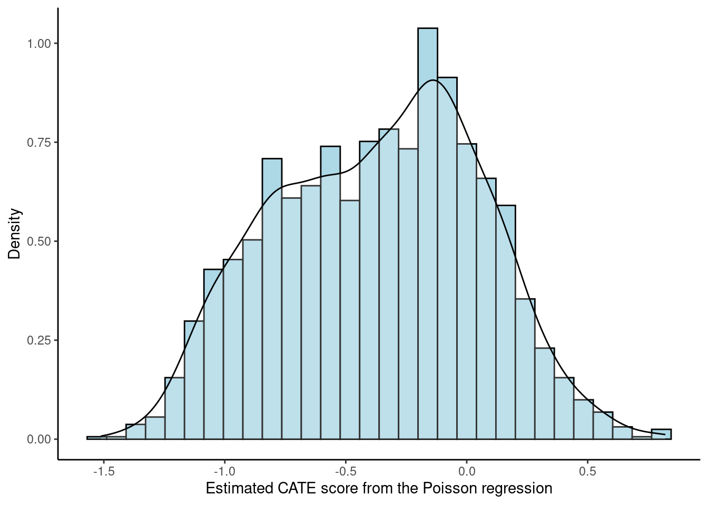
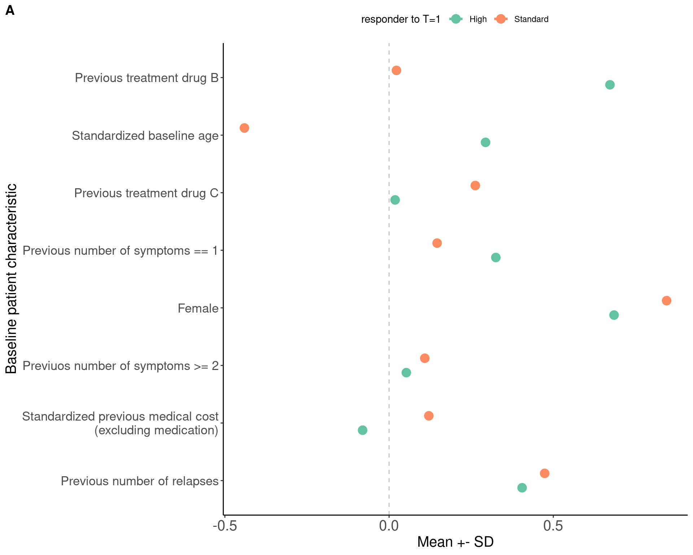
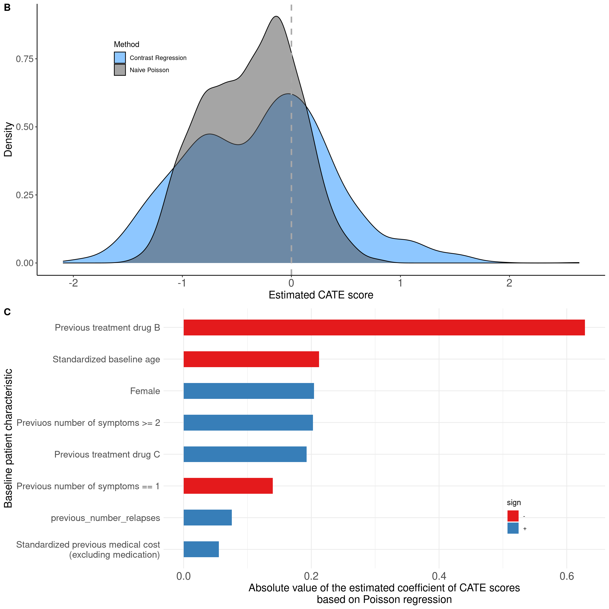

source("resources/chapter 18/functions.r")Installing package into '/home/runner/work/_temp/Library'
(as 'lib' is unspecified)Xiaotong Jiang ![]()
In this tutorial, we will walk you through the code that implemented the precision medicine methods and generated the visualization results discussed in Chapter 18 of the book. This tutorial focuses more on helping you understand the code. We will not provide detailed interpretation of the results as they have been covered in the chapter already.
We first load all relevant functions for this chapter.
source("resources/chapter 18/functions.r")Installing package into '/home/runner/work/_temp/Library'
(as 'lib' is unspecified)Subsequently, we use the function simcountdata() to generate an example dataset with a sample size of N=2000. In this example, we have two disease modifying therapies (DMT1 and DMT0) and the outcome is the number of post-treatment multiple sclerosis relapses during follow-up.
# Randomization seed
base.seed <- 999
set.seed(base.seed)
df.ori <- simcountdata(n = 2000,
seed = 63,
beta = c(log(0.4), log(0.5), log(1), log(1.1), log(1.2)),
beta.x = c(-1.54, -0.01, 0.06, 0.25, 0.5, 0.13, 0.0000003)
)$dataThank you for using fastDummies!To acknowledge our work, please cite the package:Kaplan, J. & Schlegel, B. (2023). fastDummies: Fast Creation of Dummy (Binary) Columns and Rows from Categorical Variables. Version 1.7.1. URL: https://github.com/jacobkap/fastDummies, https://jacobkap.github.io/fastDummies/.The dataset looks as follows:
head(df.ori) trt ageatindex_centered female prerelapse_num prevDMTefficacy premedicalcost
1 0 2 0 2 Low efficacy 4606.04
2 1 10 1 1 Low efficacy 17065.19
3 1 12 1 2 None 6308.39
4 1 -12 0 0 Low efficacy 16633.97
5 1 13 1 0 Low efficacy 642.96
6 1 14 1 0 Low efficacy 2989.89
numSymptoms postrelapse_num finalpostdayscount group score Iscore
1 0 1 305 Simulated 0.7129792 1
2 1 0 367 Simulated 0.7404238 2
3 0 0 325 Simulated 0.7564233 3
4 0 0 321 Simulated 0.7215764 1
5 0 0 24 Simulated 0.7457823 2
6 0 0 59 Simulated 0.7441632 2Below is a summary table of the baseline characteristics by treatment group.
| 0 (N=506) |
1 (N=1494) |
Overall (N=2000) |
|
|---|---|---|---|
| Age (years) | |||
| Mean (SD) | 45.2 (9.82) | 45.8 (9.73) | 45.7 (9.75) |
| Median [Min, Max] | 46.0 [20.0, 64.0] | 46.0 [19.0, 64.0] | 46.0 [19.0, 64.0] |
| Gender | |||
| female | 375 (74.1%) | 1123 (75.2%) | 1498 (74.9%) |
| male | 131 (25.9%) | 371 (24.8%) | 502 (25.1%) |
| Previous number of relapses | |||
| 0 | 319 (63.0%) | 973 (65.1%) | 1292 (64.6%) |
| 1 | 150 (29.6%) | 427 (28.6%) | 577 (28.9%) |
| 2 | 31 (6.1%) | 76 (5.1%) | 107 (5.4%) |
| 3 | 5 (1.0%) | 17 (1.1%) | 22 (1.1%) |
| 4 | 1 (0.2%) | 1 (0.1%) | 2 (0.1%) |
| Efficacy of previous disease modifying therapy | |||
| Low efficacy | 216 (42.7%) | 609 (40.8%) | 825 (41.3%) |
| Medium and high efficacy | 53 (10.5%) | 179 (12.0%) | 232 (11.6%) |
| None | 237 (46.8%) | 706 (47.3%) | 943 (47.2%) |
| Previous medical cost (\$) | |||
| Mean (SD) | 13700 (20400) | 14400 (24500) | 14300 (23600) |
| Median [Min, Max] | 7320 [343, 264000] | 7560 [110, 556000] | 7470 [110, 556000] |
| Previous number of symptoms | |||
| 0 | 348 (68.8%) | 995 (66.6%) | 1343 (67.2%) |
| 1 | 119 (23.5%) | 388 (26.0%) | 507 (25.4%) |
| >=2 | 39 (7.7%) | 111 (7.4%) | 150 (7.5%) |
We now define key constants for the case study.
# Baseline characteristics
covars <- c("age.z", "female", "prevtrtB", "prevtrtC", "prevnumsymp1",
"prevnumsymp2p", "previous_cost.z", "previous_number_relapses")
# Precision medicine methods to be used
pm.methods <- c("all1", "all0", "poisson", "dWOLS", "listDTR2",
"contrastReg")
# Precision medicine method labels
method.vec <- c("All 0", "All 1", "Poisson", "dWOLS",
"Contrast\n Regression", "List DTR\n (2 branches)")
# Number of folds in each CV iteration
n.fold <- 5
# Number of CV iterations
n.cv <- 10
# Sample size of the large independent test set to get true value
big.n <- 100000
# Define formula for the CATE model
cate.formula <- as.formula(paste0("y ~", paste0(covars, collapse = "+"),
"+ offset(log(years))"))
# Define formula for the propensity score model
ps.formula <- trt ~ age.z + prevtrtB + prevtrtC
# Color
myblue <- rgb(37, 15, 186, maxColorValue = 255)
mygreen <- rgb(109, 173, 70, maxColorValue = 255)
mygrey <- rgb(124, 135, 142, maxColorValue = 255)The data need to be preprocessed to be more analyzable. We recategorized treatment, previous treatment, and number of symptoms; scaled medical cost and age; and standardized the data.
df <- df.ori %>%
rename(previous_treatment = prevDMTefficacy,
age = ageatindex_centered,
y = postrelapse_num,
previous_number_relapses = prerelapse_num,
previous_number_symptoms = numSymptoms,
previous_cost = premedicalcost) %>%
mutate(previous_treatment = factor(previous_treatment,
levels = c("None",
"Low efficacy",
"Medium and high efficacy"),
labels = c("drugA", "drugB", "drugC")),
previous_number_symptoms = factor(previous_number_symptoms,
levels = c("0", "1", ">=2"),
labels = c("0", "1", ">=2")),
trt = factor(trt, levels = c(0, 1), labels = c("drug0", "drug1")),
previous_cost.z = scale(log(previous_cost), scale = TRUE),
age.z = age + 48,
age.z = scale(age.z, scale = TRUE),
years = finalpostdayscount / 365.25,
mlogarr0001 = -log(y / years + 0.001),
drug1 = as.numeric(trt == "drug1"),
prevtrtB = as.numeric(previous_treatment == "drugB"),
prevtrtC = as.numeric(previous_treatment == "drugC"),
prevnumsymp1 = as.numeric(previous_number_symptoms == "1"),
prevnumsymp2p = as.numeric(previous_number_symptoms == ">=2")) %>%
dplyr::select(age.z, female, contains("prevtrt"), previous_cost.z,
contains("prevnumsymp"),
previous_number_relapses, trt, drug1, y,
mlogarr0001, years, Iscore)
# Standardize data
z.labels <- c("age.z", "previous_cost.z")
df.s <- df
df.s[, setdiff(covars, z.labels)] <- df[, setdiff(covars, z.labels)]The following code provides details of how to implement the precision medicine methods in the example data. Please feel free to jump to the next section if you want to focus on the results. The model results are available online for you to load and save time.
We used the function listdtr() in the listdtr package to estimate individualized treatment rules (ITRs) based on the listDTR method. We used the function catefit() in the precmed package to estimate ITRs based on the Poisson and contrast regression method. These were the methods used in Section 3 of the book where we talked about directly visualizing the ITR before bringing in the outcomes. The methods are discussed in further detail by Zhao et al. (2013) and Yadlowsky et al. (2020).
library(listdtr)
# Estimated ITR based on the listDTR method with 2 branches
modlist2 <- listdtr(y = df$mlogarr, # larger is more favorable
a = df$drug1,
x = df[, c("age.z", "female", "prevtrtB",
"prevtrtC", "previous_cost.z",
"prevnumsymp1", "prevnumsymp2p",
"previous_number_relapses")],
stage.x = rep(1, 8), maxlen = 2L) # somewhat slow
# Estimated ITR based on the listDTR method with 3 branches
modlist3 <- listdtr(y = df$mlogarr,
a = df$drug1,
x = df[, c("age.z", "female", "prevtrtB",
"prevtrtC", "previous_cost.z",
"prevnumsymp1", "prevnumsymp2p",
"previous_number_relapses")],
stage.x = rep(1, 8), maxlen = 3L) # somewhat slow
# Estimated CATE score based on the Poisson and contrast regression
modpm <- catefit(response = "count",
cate.model = cate.formula,
ps.model = ps.formula,
data = df,
higher.y = FALSE,
score.method = c("poisson", "contrastReg"),
initial.predictor.method = "poisson",
seed = 999)
# Estimated CATE score based on the Poisson and contrast regression
# (based on the scaled data so the coefficients are easier to compare)
modpm.s <- catefit(response = "count",
cate.model = cate.formula,
ps.model = ps.formula,
data = df.s,
higher.y = FALSE,
score.method = c("poisson", "contrastReg"),
initial.predictor.method = "poisson",
seed = 999)For results in Sections 4 and 5, we applied cross validation to mitigate over-fitting. For this chapter, we created our own customized function cvvalue() to estimate the ITR and calculate the estimated value function via cross validation for all methods, including the fixed method. The results were all saved under the prefix cvmod. The precmed package has a built-in cross validation procedure for CATE estimation so we used the function catefit().
# Run cross validation for each method (used for Sections 4 & 5)
## Estimated CATE scores based on the Poisson and contrast regression with cross-validation
modcv <- catecv(response = "count",
cate.model = cate.formula,
ps.model = ps.formula,
data = df,
higher.y = FALSE,
score.method = c("poisson", "contrastReg"),
initial.predictor.method = "poisson",
cv.n = n.cv,
plot.gbmperf = FALSE,
seed = 999) # somewhat slow
## Estimated value function for each method
cvmodall0 <- cvvalue(data = df, xvar = covars,
method = "all0", n.fold = n.fold, n.cv = n.cv,
seed = base.seed)
cvmodall1 <- cvvalue(data = df, xvar = covars,
method = "all1", n.fold = n.fold, n.cv = n.cv,
seed = base.seed)
cvmoddwols <- cvvalue(data = df, xvar = covars,
method = "dWOLS", n.fold = n.fold, n.cv = n.cv,
seed = base.seed)
cvmodpois <- cvvalue(data = df, xvar = covars,
method = "poisson", n.fold = n.fold, n.cv = n.cv,
seed = base.seed)
cvmodlist2 <- cvvalue(data = df, xvar = covars,
method = "listDTR2", n.fold = n.fold, n.cv = n.cv,
seed = base.seed) # very slow
cvmodcontrastreg <- cvvalue(data = df, xvar = covars,
method = "contrastReg", n.fold = n.fold,
n.cv = n.cv,
seed = base.seed) # very slowAs a next step, we need to combine all estimated ITRs and value functions:
# Combine CV results
# Read in each CV result in a loop
vhats.dhat <- dhats <- NULL
mod_names <- c("cvmodall1", "cvmodall0", "cvmoddwols", "cvmodpois", "cvmodcontrastreg", "cvmodlist2")
for (mod in mod_names) {
thismod <- get(mod)
for (name in names(thismod)) {
# Get estimated values, vhat.dhat
vhats.dhat <- rbind(vhats.dhat,
thismod[[name]] %>%
map_df(~bind_rows(names(.x) %>% str_detect("vhat.dhat") %>% keep(.x, .)), .id = "fold") %>%
mutate(method = mod, cv.i = name))
# Get estimated rule from CV test fold, dhat
dhats <- rbind(dhats,
thismod[[name]] %>%
map_df(~bind_rows(names(.x) %>% str_detect("^dhat$") %>% keep(.x, .)), .id = "fold") %>%
mutate(method = mod, cv.i = name))
}
}
# One time run to get true optimal and worst value
# Simulated data only
trueV <- getTrueOptimalValue(n = big.n, seed = base.seed)
trueWorstV <- getTrueWorstValue(n = big.n, seed = base.seed)
# Preprocess
vhats.dhat %<>%
mutate(V = U/W,
VR = (U/W - trueWorstV) / (trueV - trueWorstV)) %>%
group_by(method) %>%
summarize(n.batches = n(),
n.nonnaU = sum(!is.na(U)),
n.nonnaW = sum(!is.na(W)),
meanV = mean(V, na.rm = T),
sdV = sd(V, na.rm = T),
meanVR = mean(VR, na.rm = T),
sdVR = sd(VR, na.rm = T),
.groups = "keep") %>%
ungroup %>%
arrange(desc(meanV)) %>%
mutate(method = case_when(
method == "cvmodcontrastreg" ~ "Contrast\n Regression",
method == "cvmodall0" ~ "All 0",
method == "cvmodall1" ~ "All 1",
method == "cvmodlist2" ~ "List DTR\n (2 branches)",
method == "cvmoddwols" ~ "dWOLS",
method == "cvmodpois" ~ "Poisson"),
method = factor(method,
levels = method.vec,
labels = method.vec)
)
dhats %<>%
mutate(method = case_when(
method == "cvmodcontrastreg" ~ "Contrast\n Regression",
method == "cvmodall0" ~ "All 0",
method == "cvmodall1" ~ "All 1",
method == "cvmodlist2" ~ "List DTR\n (2 branches)",
method == "cvmoddwols" ~ "dWOLS",
method == "cvmodpois" ~ "Poisson"),
method = factor(method,
levels = method.vec,
labels = method.vec)
)If the PM method already has built-in visualization (especially for tree-based methods), we can visualize the ITR directly. For example, we can simply use the function plot() to visualize the estimated ITR with the listDTR method.
#modlist3 %>% plot()We can also create our own visualization like Figure 1A in the chapter.
df.list3 <- df %>%
mutate(d.list = ifelse(age.z > 0.599 | prevtrtB > 0.5, "Recommend 1", "Recommend 0"), # based on modlist3
Rule = factor(as.character(d.list), levels = c("Recommend 0", "Recommend 1")),
prevtrtB = ifelse(prevtrtB == 1, "Previous treatment is drug B", "Previous treatment is not drug B")
)
## Figure 1A
df.list3 %>%
ggplot(aes(x = age.z, fill = Rule))+
geom_histogram(position = position_dodge2(preserve = 'single'), binwidth = 0.1)+
facet_wrap(~ prevtrtB, nrow = 2) +
scale_fill_brewer(palette = "Set1") +
labs(x = "Standardized age", y = "Count") +
theme_classic() +
theme(legend.position = 'top', text = element_text(size = 20))
The subgroup-level annualized relapse rate (ARR) can be calculated based on the listDTR ITR:
df.list3 %>%
group_by(trt, d.list) %>%
summarise(ARR = round(sum(y) / sum(years), 2),
n = n(),
`prop%` = round(n / nrow(df), 2)*100, .groups = "drop") %>%
rename("listDTR ITR" = d.list,
"Observed treatment" = trt) %>%
kable() %>%
kable_styling(full_width = F)| Observed treatment | listDTR ITR | ARR | n | prop% |
|---|---|---|---|---|
| drug0 | Recommend 0 | 0.32 | 197 | 10 |
| drug0 | Recommend 1 | 0.31 | 309 | 15 |
| drug1 | Recommend 0 | 0.39 | 615 | 31 |
| drug1 | Recommend 1 | 0.16 | 879 | 44 |
Patients who received drug 0 and were recommended drug 0 by listDTR had a similar ARR on average than those who received drug 0 but were recommended drug 1 (0.32 vs 0.31). Patients who received drug 1 and were recommended drug 1 by listDTR had a much lower ARR on average than those who received drug 1 but were recommended drug 0 (0.16 vs 0.39).
Although some PM methods do not have built-in visualization or not as white-box as some more interpretable methods, there still might be ways to visualize the ITR. For example, score-based methods (such as Poisson and contrast regression) produce an estimate of the CATE score for each patient, and a classification tree can be fitted on these scores and visualized. Below is a histogram-density plot of the CATE scores estimated from the Poisson regression and the fitted classification tree using the estimated CATE scores. We pruned the tree so it only had three nodes for simplicity. The rpart.plot package has a built-in visualization function of the rpart model, rpart.plot(), which is how Figure 1B in the chapter was generated.
df["score.poisson"] <- modpm$score.poisson
ggplot(df, aes(x = score.poisson)) +
geom_histogram(aes(y = ..density..), colour = "black", fill = "lightblue") +
geom_density(alpha = .2, fill = "white") +
labs(x = "Estimated CATE score from the Poisson regression", y = "Density") +
theme_classic()Warning: The dot-dot notation (`..density..`) was deprecated in ggplot2 3.4.0.
Please use `after_stat(density)` instead.`stat_bin()` using `bins = 30`. Pick better value with `binwidth`.
modtree <- rpart(as.formula(paste0("score.poisson ~", paste0(covars, collapse = "+"))),
method = "anova", data = df, control = rpart.control(minsplit = 100, cp = 0.01)) # Fit Poisson CATE scores on a classification tree
modtree.pr <- prune(modtree, cp = 0.09) # I ended up choosing a higher cp value to have only 3 subgroups
# print(rpart.rules(modtree.pr, cover = TRUE))
## Figure 1B
rpart.plot(modtree.pr, box.palette = "RdBu", type = 5, under = TRUE, tweak = 1.2, compress = TRUE)The CATE scores are now simplified as a tree classifier. Previous treatment of drug B and age seemed to be important in determining the CATE score values, which also showed up in the estimated from the listDTR method. Patients with previous treatment of drug B had the lowest CATE score on average (-0.76) and took up 41% of the samples (dark orange). Patients whose previous treatment was not drug B and age was >= -0.22 standard deviation of the mean also had a negative CATE score on average (-0.23) and took up 36% of the samples (light orange), but not as low as the dark orange group. Negative CATE scores mean that the number of relapses was expected to be lower for those recommended drug 1 than those recommended drug 0, so drug 1 was favored for them. For the blue group, the average CATE score was 0.13, taking up 23% of the samples, and they were expected to benefit from drug 0 based on the Poisson CATE scores.
The accuracy of ITR is the proportion of patients whose estimated ITR is the same as the true optimal ITR. The estimated ITRs have been obtained from the PM methods but we need to calculate the true optimal ITR. This is only possible for simulated data where the decision boundary is known. Based on the data generating mechanism in simcountdata(), Iscore is a score generated from a linear combination of baseline covariates where lower scores represented that drug 1 was better and higher scores represented that drug 0 was better. We then classified patients in 5 equal-size subgroups based on the Iscore, where groups 1 and 2 have drug 1 as their true optimal ITR and groups 3 and 4 have drug 0 as their true optimal ITR. Group 3 is considered the neutral group, where patients are indifferent to either drug so we assign the true optimal ITR to be their observed treatment. Thus, we identify the true optimal ITR for every patient based on this subgrouping, which was derived from their true score Iscore. Since we used cross validation in estimating the ITR, we need to apply the exact same cross validation to the true optimal ITR. This is achieved by specifying the same randomization seed in the cross validation loop (see seed).
## Create new columns
dhats$d <- rep(NA, nrow(dhats)) # true d
# Identify the true optimal treatment
# See simcountdata() in the function script to learn more about Iscore
sim <- df %>%
mutate(trueT = ifelse(as.numeric(Iscore) < 3, 1, 0),
trueT = ifelse(Iscore == 3, drug1, trueT)) # neutral group
# Format data
input <- data.frame(y = sim$y,
trt = sim$drug1,
time = log(sim$years),
sim[covars])
# Cross validation loop
for (i in unique(dhats$cv.i)) {
seed <- base.seed*100 + as.numeric(str_extract(i, "[0-9]+"))
set.seed(seed)
# Create CV folds
folds <- createFolds(input$trt, k = n.fold, list = TRUE)
for (fold.i in seq(n.fold)) {
testdata <- sim[folds[[fold.i]],]
# number of methods which succeeded for the given fold/batch.
ind_result <- which(dhats$fold == paste0("fold", fold.i) &
dhats$cv.i == i &
!is.na(dhats$dhat))
nr <- length(ind_result)
dhats$d[ind_result] <- rep(testdata$trueT, nr/nrow(testdata))
stopifnot(nr %% nrow(testdata) == 0)
}
} # end of all cv iterationsOnce we identified the true optimal ITR (\(d^{opt}\)), we can calculate the accuracy in each validation fold for each PM method (\(\hat{d}_{pm}\)). Mathematically, accuracy can be expressed as \[Accuracy_{pm}(\boldsymbol{x}^{val}) = \frac{1}{n^{val}}\sum_{i = 1}^{n^{val}} I\big(\hat{d}_{pm}(\boldsymbol{x}_i^{val}) == d^{opt}(\boldsymbol{x}_i^{val})\big),\] where \(n^{val}\) is the sample size in the validation fold, \(\boldsymbol{x}_i^{val}\) is the baseline characteristics of the \(i\)th patient in the validation fold, and \(pm\) stands for one PM method.
Below is how Figure 2 in the chapter was generated. It summarized the accuracy across all validation folds as a box plot so we can also learn the variability of accuracy across folds.
##### Accuracy #####
## Calculate % accuracy for each iteration & summary statistics
dhats.accuracy <- dhats %>%
group_by(method, cv.i, fold) %>%
summarise(accuracy = sum(dhat == d)/n(), .groups = "drop") %>%
ungroup
## Make the accuracy plot, Figure 2
dhats.accuracy %>%
ggplot(aes(x = method, y = accuracy)) +
geom_boxplot() +
geom_hline(yintercept = 1, linetype = 2, linewidth = 1, color = "gray") +
geom_hline(yintercept = 0.5, linetype = 2, linewidth = 1, color = "gray") +
theme_classic() +
labs(x = "Method", y = "Accuracy") +
theme(axis.text = element_text(size = 15),
axis.title.y = element_text(size = 15),
axis.title.x = element_text(size = 15),
axis.text.x = element_text(angle = 0, size = 15),
strip.text.x = element_text(size = 15))When we do not know the true data generating mechanism, e.g., real-world data, we cannot compare the estimated ITR with the true optimal ITR. However, we can compare the estimated ITR with another estimated ITR, and this is called agreement. Agreement is the proportion of patients whose estimated ITR of a method is the same as the estimated ITR of another method. Thus, agreement is between two methods. Mathematically, \[Agreement_{1, 2}(\boldsymbol{x}^{val}) = \frac{1}{n^{val}} \sum_{i = 1}^{n^{val}} I\big( \hat{d}_{1}(\boldsymbol{x}^{val}) == \hat{d}_{2} (\boldsymbol{x}^{val}) \big), \] where \(n^{val}\) is the sample size in the validation fold, \(\boldsymbol{x}_i^{val}\) is the baseline characteristics of the \(i\)th patient in the validation fold, and \(1, 2\) stands for method 1 and method 2.
##### Agreement #####
dhats.concat <- dhats %>%
arrange(cv.i, fold, method) %>%
mutate(iteration.fold = (as.numeric(str_extract(cv.i, "[0-9]+")) - 1) * 10 + as.numeric(str_extract(fold, "[0-9]+"))) %>%
dplyr::select(method, iteration.fold, dhat) %>%
group_by(method, iteration.fold) %>%
mutate(i = 1:n()) %>%
ungroup
m <- length(method.vec)
dhats.agreement <- matrix(nrow = m, ncol = m)
colnames(dhats.agreement) <- method.vec
rownames(dhats.agreement) <- method.vec
for(k in seq_len(m)){
for(j in seq(k, m)){
data.k <- dhats.concat %>% filter(method == method.vec[k])
data.j <- dhats.concat %>% filter(method == method.vec[j])
data.jk <- data.k %>% full_join(data.j, by = c("iteration.fold", "i"))
dhats.agreement[k, j] <- dhats.agreement[j, k] <- sum(data.jk$dhat.x == data.jk$dhat.y, na.rm = T) / sum(is.na(data.jk$dhat.x) == FALSE & is.na(data.jk$dhat.y) == FALSE)
}
}
# Make the agreement plot, Figure 3
corrplot(dhats.agreement, method = "color", type = "lower",
addCoef.col = "orange", number.cex = 1.5,
tl.cex = 1.2, cl.cex = 1.2, tl.col = "black", tl.srt = 0, tl.offset = 1.5)We used the corrplot package to generate Figure 3 in the chapter but agreement can be visualized in other creative ways that you prefer.
Patient well-being is evaluated via the value function, which is defined as the expected outcome had they followed the specified ITR. Like a fortune tellers crystal ball, this metric tells us how well the patients would do on average under each ITR. We can then compare across different ITRs and identify an optimal ITR. Cross validation is necessary here to mitigate over-fitting, and we visualized the value function results as error bar plots. The mean and standard deviation of the value functions have been preprocessed previously. We use ggplot() to generate the error bar plots. Figure 4A is the original value function estimates, and Figure 4B is the standardized value ratio estimates, which convert value functions to a ratio where 1 is always more desirable.
##### Errorbar plot #####
# Figure 4A
p4a <- vhats.dhat %>%
ggplot(aes(x = method, y = meanV)) +
geom_point(size = 8, shape = 16, color = "navy") +
geom_errorbar(aes(ymin = meanV - sdV, ymax = meanV + sdV), width = 0.3, size = 2, position = position_dodge(0.9), color = "navy") +
theme_classic() + xlab("") + ylab("Cross-validated value (mean +- SD)") +
theme(axis.text = element_text(size = 15), axis.title.y = element_text(size = 15)) +
geom_hline(yintercept = vhats.dhat$meanV[which(vhats.dhat$method == "All 1")], linetype = 2, size = 1.5, color = "gray")Warning: Using `size` aesthetic for lines was deprecated in ggplot2 3.4.0.
Please use `linewidth` instead.##### Value ratio #####
# Figure 4B
p4b <- vhats.dhat %>%
dplyr::select(method, contains("VR"), n.nonnaU) %>%
ggplot(aes(x = method, y = meanVR)) +
geom_point(size = 8, color = "navy") +
geom_errorbar(aes(ymin = meanVR - sdVR, ymax = meanVR + sdVR), width = 0.3, size = 2, position = position_dodge(0.9), color = "navy") +
geom_hline(yintercept = 1, color = "gray", linetype = 2, size = 1) +
geom_hline(yintercept = 0, color = "gray", linetype = 2, size = 1) +
scale_y_continuous(breaks = seq(0, 1, length = 6)) +
theme_classic() +
labs(x = "", y = "Value ratio of cross-validated estimated decision rule (mean +- SD)") +
theme(axis.text = element_text(size = 13),
axis.title.y = element_text(size = 15),
axis.title.x = element_text(size = 15),
axis.text.x = element_text(size = 15),
strip.text.x = element_text(size = 12))
# Figure 4
ggarrange(p4a, p4b, ncol = 2, nrow = 1, labels = c("A", "B"))The package we used for the two score-based methods (Poisson and contrast regression), PrecMed, has built-in visualization tools to diagnose the results: validation box plots boxplot(), validation curves plot(), and area between curves (ABC) statistics abc().
##### Validation of ITR scores #####
# Figure 5A
p5a <- boxplot(modcv, ylab = "Rate ratio between T=1 and T=0 in each subgroup")
# Figure 5B
p5b <- plot(modcv, ylab = "Rate ratio between T=1 and T=0 in each subgroup")
# Figure 5
ggarrange(p5a, p5b, ncol = 1, nrow = 2, labels = c("A", "B"))The PrecMed package has more PM methods implemented other than Poisson and contrast regression that you can try, such as negative binomial and two regressions. See its documentation for more details.
The 60/40 cutoff was used in the chapter to split patients into high responders and standard responders. The function CreateTableOne() in the tableone package was used to generate a table comparing side-by-side the baseline characteristics between the two responder groups.
##### Side-by-side baseline characteristic comparison between responder subgroups #####
cutoff <- quantile(modpm$score.poisson, 0.6) # 60/40 high vs standard responder split
df["responder to T=1"] <- ifelse(modpm$score.poisson < cutoff, "High", "Standard")
df["age.z"] <- as.numeric(df$age.z)
df["previous_cost.z"] <- as.numeric(df$previous_cost.z)
labs <- list("age.z" = "Standardized baseline age", "female" = "Female",
"prevtrtB" = "Previous treatment drug B", "prevtrtC" = "Previous treatment drug C",
"prevnumsymp1" = "Previous number of symptoms == 1",
"prevnumsymp2p" = "Previuos number of symptoms >= 2",
"previous_cost.z" = "Standardized previous medical cost\n(excluding medication)",
"previos_number_relapses" = "Previous number of relapses")
tab <- CreateTableOne(vars = covars, strata = "responder to T=1", data = df, test = F) %>% print(smd = T) Stratified by responder to T=1
High Standard SMD
n 1200 800
age.z (mean (SD)) 0.29 (0.94) -0.44 (0.92) 0.789
female (mean (SD)) 0.69 (0.46) 0.84 (0.36) 0.384
prevtrtB (mean (SD)) 0.67 (0.47) 0.02 (0.15) 1.867
prevtrtC (mean (SD)) 0.02 (0.13) 0.26 (0.44) 0.750
prevnumsymp1 (mean (SD)) 0.32 (0.47) 0.15 (0.35) 0.431
prevnumsymp2p (mean (SD)) 0.05 (0.22) 0.11 (0.31) 0.208
previous_cost.z (mean (SD)) -0.08 (1.00) 0.12 (0.99) 0.203
previous_number_relapses (mean (SD)) 0.41 (0.64) 0.47 (0.68) 0.104We can directly present the table or visualize the comparison with errorbar plots, which is what the chapter presented (Figure 6A). Here we show both. Tables are helpful if specific numbers are important but readers would have to perform mental comparison to understand which value is higher, whereas plots are helpful if you want people to quickly identify the larger differences and not focus on the specific values of certain results.
smd <- as_tibble(tab, rownames = "var") %>%
rowwise() %>%
mutate(variable = as.factor(str_extract(var, ".*(?= \\(mean \\(SD\\)\\))"))) %>%
filter(!is.na(variable)) %>%
arrange(desc(SMD)) %>%
mutate(smd = paste0("SMD =", SMD),
variable = labs[[variable]]) %>%
dplyr::select(variable, smd) %>%
mutate(ID = 1)
levels <- unique(smd$variable)
p6a <- df %>%
mutate(ID = 1:n()) %>%
dplyr::select(all_of(covars), ID, contains("responder")) %>%
melt(id = c("ID", "responder to T=1")) %>%
rowwise() %>%
mutate(variable = labs[[variable]]) %>%
left_join(smd, by = c("variable", "ID")) %>%
mutate(variable2 = factor(variable, levels = levels)) %>%
ggplot(aes(x = reorder(variable2, desc(variable2)), color = `responder to T=1`, y = value, group = `responder to T=1`)) +
stat_summary(fun = mean, geom = "point", size = 4, position = position_dodge(width = 0.5)) +
stat_summary(fun.data = mean_sdl, geom = "errorbar", position = position_dodge(width = 0.5), width= 0.3, size = 1.2) +
geom_hline(yintercept = 0, color = "gray", linetype = "dashed") +
geom_text(aes(label = smd), hjust = -0.5, y = -1.5, color = "darkgray", size = 3.5) +
# facet_wrap(~ variable2, nrow = 4) +
labs(x = "Baseline patient characteristic",
y = "Mean +- SD") +
coord_flip() +
scale_color_brewer(palette = "Set2") +
theme_classic() +
theme(legend.position = "top",
axis.text = element_text(size = 13),
axis.title.y = element_text(size = 15),
axis.title.x = element_text(size = 15),
axis.text.x = element_text(size = 15),
strip.text.x = element_text(size = 12))
# Figure 6A
ggarrange(p6a, nrow = 1, labels = c("A"))
We can also show the density of ITR scores obtained from the score-based methods. The results can be found in modpm and we used histogram to visualize (Figure 6B).
##### Density of ITR score #####
dataplot <- data.frame(score = factor(rep(c("Naive Poisson", "Contrast Regression"),
each = length(modpm$score.poisson))),
value = c(modpm$score.poisson, modpm$score.contrastReg))
p6b <- dataplot %>%
ggplot(aes(x = value, fill = score)) +
geom_density(alpha = 0.5) +
scale_fill_manual(values = c("dodgerblue", "gray30")) +
geom_vline(xintercept = 0, color = "darkgray", linetype = "dashed", size = 1) +
labs(x = "Estimated CATE score", y = "Density", fill = "Method") +
theme_classic() +
theme(legend.position = c(0.2, 0.8),
axis.text = element_text(size = 13),
axis.title.y = element_text(size = 15),
axis.title.x = element_text(size = 15),
axis.text.x = element_text(size = 15),
strip.text.x = element_text(size = 12))Warning: A numeric `legend.position` argument in `theme()` was deprecated in ggplot2
3.5.0.
Please use the `legend.position.inside` argument of `theme()` instead.The ITR scores are essentially a linear combination of the baseline characteristics, thus it might be also of interest for one to know the corresponding coefficients (or weights) which shows how much each baseline variable contributed to the ITR score. To make it comparable across different scales of the baseline variables, we used the scaled data and the model result modpm.s was used to extract the coefficients and visualize as a bar plot. The coefficients can be presented in a table as well.
# Coefficients
coef <- modpm.s$coefficients
p6c <- coef %>%
as_tibble(rownames = "varname") %>%
melt(id.vars = "varname") %>%
filter(variable == "poisson", varname != "(Intercept)") %>%
mutate(absval = abs(value),
sign = ifelse(value > 0, "+", "-")) %>%
arrange(absval) %>%
mutate(varname = factor(varname, levels = unique(varname))) %>%
ggplot(aes(x = varname, y = absval, fill = sign)) +
geom_bar(stat = "identity", width = 0.5) +
scale_fill_brewer(palette = "Set1") +
scale_x_discrete(labels = labs) +
coord_flip() +
labs(y = "Absolute value of the estimated coefficient of CATE scores\nbased on Poisson regression", x = "Baseline patient characteristic") +
theme_minimal() +
theme(legend.position = c(0.8, 0.2),
axis.text = element_text(size = 13),
axis.title.y = element_text(size = 15),
axis.title.x = element_text(size = 15),
axis.text.x = element_text(size = 15),
strip.text.x = element_text(size = 12))
# Figure 6B, 6C
ggarrange(p6b, p6c, nrow = 2, labels = c("B", "C"))
# Coefficients presented as a table
coef %>% round(2) %>% kable() %>% kable_styling(full_width = F)| poisson | contrastReg | SE_contrastReg | |
|---|---|---|---|
| (Intercept) | -0.30 | -0.25 | 0.46 |
| age.z | -0.21 | -0.23 | 0.17 |
| female | 0.20 | 0.29 | 0.43 |
| prevtrtB | -0.63 | -0.86 | 0.36 |
| prevtrtC | 0.19 | 0.21 | 0.54 |
| prevnumsymp1 | -0.14 | -0.42 | 0.39 |
| prevnumsymp2p | 0.20 | 1.05 | 0.58 |
| previous_cost.z | 0.06 | 0.13 | 0.18 |
| previous_number_relapses | 0.08 | 0.26 | 0.23 |
This chapter was rendered using the following version of R and its packages:
R version 4.2.3 (2023-03-15)
Platform: x86_64-pc-linux-gnu (64-bit)
Running under: Ubuntu 22.04.4 LTS
Matrix products: default
BLAS: /usr/lib/x86_64-linux-gnu/openblas-pthread/libblas.so.3
LAPACK: /usr/lib/x86_64-linux-gnu/openblas-pthread/libopenblasp-r0.3.20.so
locale:
[1] LC_CTYPE=C.UTF-8 LC_NUMERIC=C LC_TIME=C.UTF-8
[4] LC_COLLATE=C.UTF-8 LC_MONETARY=C.UTF-8 LC_MESSAGES=C.UTF-8
[7] LC_PAPER=C.UTF-8 LC_NAME=C LC_ADDRESS=C
[10] LC_TELEPHONE=C LC_MEASUREMENT=C.UTF-8 LC_IDENTIFICATION=C
attached base packages:
[1] stats graphics grDevices utils datasets methods base
other attached packages:
[1] fastDummies_1.7.3 reshape2_1.4.4 truncnorm_1.0-9 table1_1.4.3
[5] kableExtra_1.4.0 knitr_1.45 ggpubr_0.6.0 MASS_7.3-58.2
[9] corrplot_0.92 caret_6.0-94 lattice_0.20-45 gbm_2.1.9
[13] tableone_0.13.2 rpart.plot_3.1.2 rpart_4.1.19 precmed_1.0.0
[17] DTRreg_2.0 magrittr_2.0.3 lubridate_1.9.3 forcats_1.0.0
[21] stringr_1.5.1 dplyr_1.1.4 purrr_1.0.2 readr_2.1.5
[25] tidyr_1.3.1 tibble_3.2.1 ggplot2_3.5.0 tidyverse_2.0.0
loaded via a namespace (and not attached):
[1] colorspace_2.1-0 ggsignif_0.6.4 class_7.3-21
[4] ggridges_0.5.6 proxy_0.4-27 rstudioapi_0.15.0
[7] farver_2.1.1 listenv_0.9.1 prodlim_2023.08.28
[10] fansi_1.0.6 xml2_1.3.6 codetools_0.2-19
[13] splines_4.2.3 Formula_1.2-5 jsonlite_1.8.8
[16] pROC_1.18.5 broom_1.0.5 geepack_1.3.10
[19] data.tree_1.1.0 DiagrammeR_1.0.11 clipr_0.8.0
[22] compiler_4.2.3 randomForestSRC_3.2.3 backports_1.4.1
[25] Matrix_1.6-5 fastmap_1.1.1 survey_4.4-1
[28] cli_3.6.2 visNetwork_2.1.2 htmltools_0.5.7
[31] tools_4.2.3 gtable_0.3.4 glue_1.7.0
[34] MESS_0.5.12 Rcpp_1.0.12 carData_3.0-5
[37] vctrs_0.6.5 svglite_2.1.3 nlme_3.1-162
[40] iterators_1.0.14 timeDate_4032.109 gower_1.0.1
[43] xfun_0.42 globals_0.16.3 timechange_0.3.0
[46] lifecycle_1.0.4 geeM_0.10.1 mosaicCore_0.9.4.0
[49] rstatix_0.7.2 future_1.33.1 scales_1.3.0
[52] ipred_0.9-14 hms_1.1.3 parallel_4.2.3
[55] RColorBrewer_1.1-3 yaml_2.3.8 labelled_2.12.0
[58] gam_1.22-3 stringi_1.8.3 highr_0.10
[61] foreach_1.5.2 e1071_1.7-14 hardhat_1.3.1
[64] lava_1.8.0 shape_1.4.6.1 systemfonts_1.0.6
[67] rlang_1.1.3 pkgconfig_2.0.3 evaluate_0.23
[70] labeling_0.4.3 recipes_1.0.10 htmlwidgets_1.6.4
[73] cowplot_1.1.3 tidyselect_1.2.1 parallelly_1.37.1
[76] ggformula_0.12.0 plyr_1.8.9 R6_2.5.1
[79] generics_0.1.3 DBI_1.2.2 pillar_1.9.0
[82] haven_2.5.4 withr_3.0.0 survival_3.5-3
[85] abind_1.4-5 nnet_7.3-18 future.apply_1.11.1
[88] car_3.1-2 utf8_1.2.4 tzdb_0.4.0
[91] rmarkdown_2.26 grid_4.2.3 data.table_1.15.2
[94] ModelMetrics_1.2.2.2 digest_0.6.35 stats4_4.2.3
[97] munsell_0.5.0 glmnet_4.1-8 viridisLite_0.4.2
[100] mitools_2.4